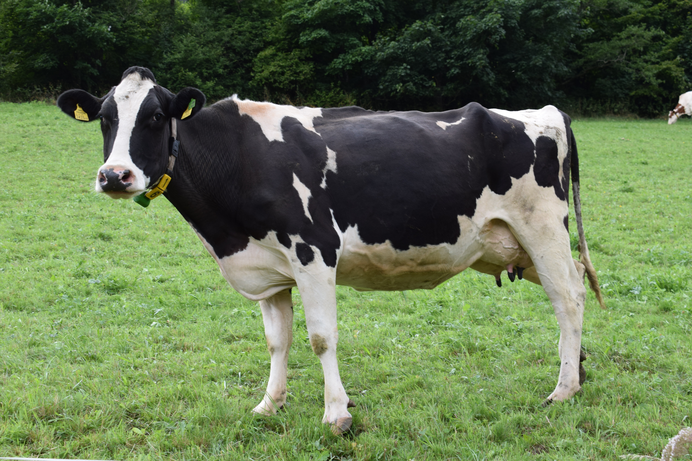

소과의 포유동물. 초식동물[2]로 위(소화기관)가 4개이고 이를 이용해 되새김질을 한다. 선량해 보이는 크고 똘망똘망한 눈이 인상적인데, 색 구분이 잘 안 되며 시야가 매우 넓어 몸 뒤쪽까지 볼 수 있다. 어금니는 위아래 전부 있으나, 앞니는 윗니가 없다. 한우는 15년 정도 산다고 알려졌으나 일소는 30년까지도 산다고 한다. 은근히 귀여워하는 사람도 꽤 있으며 힌두교에서는 매우 신성시한다. 식용으로 사용되는 소들의 경우 호르몬의 차이로 인해 수소보다 암소가 맛이 더 뛰어나기 때문에 대부분 송아지 때 거세를 당한다.거세를 당하지 않는 수소를 씨수소라고 부르는데 이 씨수소들 중 약 10%만이 정자를 배출해서 씨를 뿌린다. 정액을 추출하는 과정을 요약하자면, 우선 암소와 직접 짝짓기를 하지 않는다. 수소를 끌고 오고 짝짓기를 시키는게 비용도 많이 들고 번거롭기 때문에 정액만 사다가 암소에게 주입하는 인공수정을 하는데, 숫소 정액은 숫소에게 발정제를 주입하고 모형에 올라타게 만들어 추출한다.